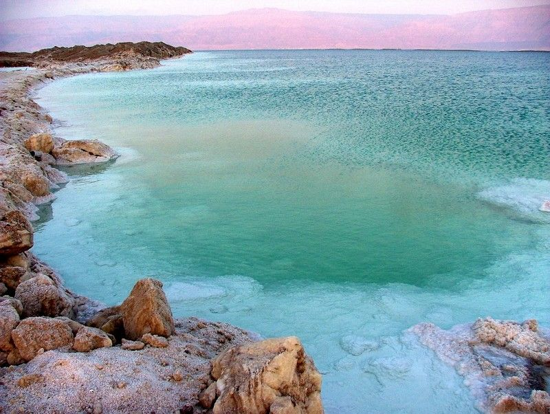

Мёртвое море — действительно уникальное природное чудо.
- География: Мёртвое море расположено между Иорданией и Израилем, образующее естественную границу между двумя странами.
- Историческая ценность: Место связано с библейскими событиями и историей. В окрестностях находились древние города Содом и Гоморра.
- Природные ресурсы: Озеро славится своими минералами, включая магний, калий и бром, которые используются в производстве косметики и медицинских препаратов.
- Падение уровня: Уровень воды в Мёртвом море снижается ежегодно на 1 метр, что вызвано пандемией человеческой деятельности и изменением климата.
- Туризм: Плавание на поверхности — популярное развлечение. Также можно увидеть натуральные соляные образования и кристаллы.
- Флора и фауна: Хотя в воде практически нет жизни, вокруг находятся каменные и соляные образования, а также редкие виды растений.
- Культура: Место вдохновляет художников и писателей, станичиы также привлекает внимание к проблемам экологии.
Мёртвое море — место, где природа встречается с историей и культурой!